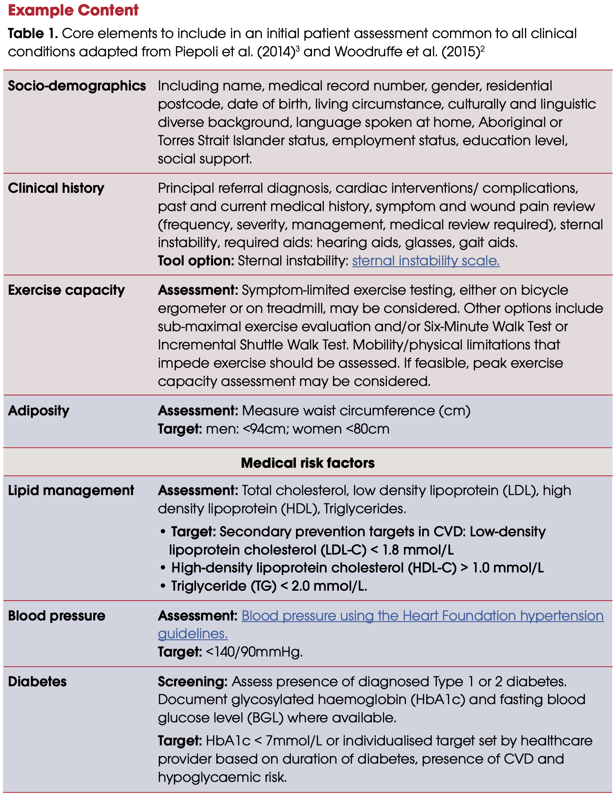
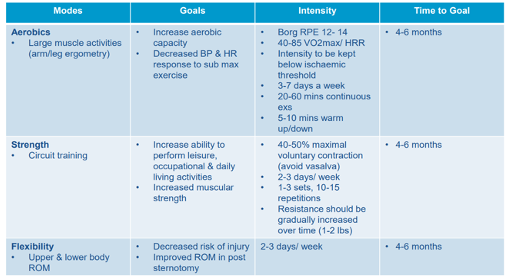
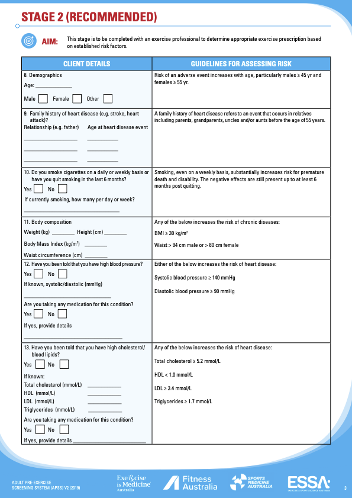

Pre-Lab Activity
Complete the short Diabetes Quiz in your Canvas Modules.
If you are using the online lab manual, when you have completed the lab content and discussion questions for this week, print this webpage to PDF to save a copy on your device
All text entry boxes will clear if you leave or refresh this page
Lab Session
Introduction
Within this tutorial you will learn how cardiac rehabilitation programs are implemented. Specifically, you will learn how to assess, screen, and prescribe programs for patients with cardiovascular disease through case studies. There will be a discussion about various precautions and contraindications for exercise prescription for CVD. Students will undertake a series of health screening protocols and discuss their relevance and importance to the safety aspects of clinical exercise physiology along with the need to work within the scope of practice.
The objectives of this lab are to:
Gain a detailed understanding of treatment strategies for cardiovascular conditions
To undertake screening exercises and appropriate questionnaires in the context of patients with cardiovascular disease
To consider the clinical aspects and logistical implications of implementing treatment for cardiovascular conditions
To develop safe and effective cardiac rehabilitation programs for a range of case studies
Activity 1 - Cardiac Rehabilitation
Importance of Cardiac Rehabilitation

How Do Cardiac Rehab Programs Work?
Cardiac rehabilitation usually runs for 6 to 10 weeks. It often starts in hospital and continues when you go home. Programs can be implemented in different ways and places, for example:
Face-to-face
Over the telephone
On the internet
In a group or one-on-one
In hospitals, community centres or clinics
In your home
Cardiac Rehabilitation Process and Education
The following are the Heart Foundation’s essential steps in the cardiac rehabilitation process.


An example brochure for a Sydney-based Cardiac Rehabilitation program is included below for you to gain an insight to the types of activities. We are fortunate to be able to gain detailed insight into such a program from the lead Exercise Physiologist in class.


Heart Foundation Recommendations for Initial Assessment Measures and Tools
All the major cardiac rehabilitation guidelines recommend that individualised assessments should be provided in the initial stages of a program and re-assessed prior to completion.
Collaborative goal-setting and shared decision-making is essential to fostering self-care in a chronic disease population. This process should commence at the initial assessment and continue to be reviewed throughout the program.
Cardiac Rehabilitation involves a multidisciplinary team: rehabilitation specialists, cardiologists, cardiothoracic surgeons, nursing, exercise physiologists, physiotherapists, occupational therapists, dieticians and social workers.
The Heart Foundation provides a large range of resources for practitioners which outline aspects of assessing patients, exercise prescription, healthy eating and psychological well-being.
Below are some examples from the Heart Foundation cardiac rehabilitation program content.



In pairs, answer the following questions.
Lab Question 1
| List 2 essential components of a Cardiac Rehabilitation Initial Assessment: |
Lab Question 2
| What are two clinical exercise capacity assessments you could apply in a CR setting? |
Activity 2 - Screening, Lifestyle Risk Factors, and Risk Stratification
There are many different methods of screening individuals for medical conditions. Screening activities and questionnaires must be able to elucidate the issues associated with the ACSM table below. Typically, questionnaires aim to probe the patient/client to remembering any family history of illness or disease, any previous complications, and other conditions that may be present. Risk stratification is essential when working with individuals with chronic disease.

Risk Stratification


Screening in the Australian Context: The Adult Pre-Exercise Screening System (APSS)
The APSS is accepted in Australia as the industry standard pre-exercise screening system as it is endorsed by the peak bodies of exercise in the country - Exercise and Sports Science Australia (ESSA), Sports Medicine Australia (SMA), and Fitness Australia.
There is a user guide to frame how each question should be approached and the screening tool consists of two stages. Both the user guide and screening tool are available at the ESSA website. It is also available in the Appendix for this lab.
Stage 1, which can be self-administered by the client, consists of six questions which are answered YES or NO, and are designed to identify individuals with signs or symptoms of underlying disease, or who may be at higher risk of an adverse event during exercise.
If the individual answers NO to all six questions, then the individual notes their exercise levels and is free to undertake light-moderate intensity exercise, but importantly, not high intensity exercise unless they are already undertaking >150 minutes per week. Definitions of exercise intensities using a range of objective and subjective criteria are clearly specified in the APSS documentation.
Ticking YES to any Stage 1 question identifies the individual being at “higher risk”, which then requires a referral to an appropriately qualified allied health professional, such as AEP or a GP for additional guidance and assessment prior to undertaking exercise.
Stage 2 of the APSS is to be conducted by a qualified exercise professional and consists of additional questions on cardiac risk factors and medical history.
When considering the Case Studies below, use the APSS as part of your screening process.
Activity 3 - Exercise Precautions and Contraindications
Exercise Precautions and Monitoring
When conducting exercise with patients with known and unknown low, moderate, or high risk of coronary heart disease you must always monitor exercise intensity and abnormal signs of symptoms, e.g., chest tightness/pain, dizziness, nausea. With resistance exercises it is important to avoid the Valsalva manoeuvre for all cardiac patients.
You will already be familiar with some common exercise monitoring methods. They may be objective or subjective measurement tools, and some are more accessible than others. Examples of these include:
RPE (Borg Scale)
Blood Pressure & Heart Rate
Talk Test
Self Monitoring - always teach patient how to do this
Symptoms (e.g., Angina Scale)
METs
Pulse Oximeter
ECG
General Observation
Monitoring should be done before, during, and after sessions to ensure no adverse outcomes. It’s important to make sure the patient (and the person supervising) knows their limits.
Contraindications to Exercise
It’s important to be aware of and understand the contraindications to exercise - conditions that suggest we should avoid exercise.
Absolute Contraindications
A recent significant change in the resting ECG suggesting significant ischemia, recent myocardial infarction (within 2 days) or other cardiac event
Unstable coronary heart disease
Uncontrolled cardiac arrhythmias causing symptoms or hemodynamic compromise
Severe symptomatic aortic stenosis
Uncontrolled symptomatic heart failure
Acute pulmonary embolus
Acute myocarditis or pericarditis
Suspected or known dissecting aneurysm
Acute infection
Relative Contraindications
Left main coronary stenosis
Moderate valvular stenosis
Electrolyte abnormalities (hypokalemia, hypomagnesemia)
Systolic blood pressure at rest over 200 mmHg, diastolic over 120 mmHg
Tachyarrhythmias or bradyarrhythmias
Hypertrophic cardiomyopathy or other forms of outflow tract obstruction
Neuromuscular, musculoskeletal, or rheumatic disorders that are exacerbated by exercise
High degree atrioventricular block
Ventricular aneurisym
Uncontrolled metabolic disease
Sternal Precautions Post Coronary Artery Bypass Graft (CABG)
No flexion/abduction past 90 degrees
No weight-bearing through the upper extremities
No lifting >5-10 lb (max 4.5kg).
No unilateral reaching posteriorly
Sternal cracking/popping/clicking/clunking/pain could be sternal instability (***6-8 weeks for the sternum to heal***)
Cardiac Exercise Prescription
Below are some refresher examples of appropriate prescription for cardiac rehabilitation.

Lab Question 3
| List 2 absolute and 2 relative contraindications to exercise |
Lab Question 4
| What are two precautions for a patient 3 weeks post CABG? |
Activity 4 - Case Studies
For the following case studies, work in pairs to perform a mock cardiac assessment. Nominate one assessor and one mock patient.
Screen the patient, complete the sample cardiac assessment form, highlight any precautions, and create an exercise management plan (EMP) for the case study. The EMP should include short- and long-term SMART goals, a couple of exercise capacity assessments, and 4 weeks of exercise prescription with a 2-week progression.
The following are provided below and in the Appendix for this Lab to help you complete each case study:
An APSS form
A Cardiac Assessment form
An Exercise Management Plan template
Case Study 1
Cathy is a 62-year old female with Coronary Artery Disease.
Cathy attends your Cardiac Rehabilitation program 3 weeks post-operation for a double bypass. In her discharge summary from hospital you read the following findings: LDL 1.6 mmol/L; waist circumference 85 cm; resting BP 135/85; and, resting HR 65bpm. Medications on discharge: Atorvastatin (Lipitor – cholesterol lowering medication), Captopril (ACE inhibitor – BP lowering medication), and Sertraline (Selective Serotonin Reuptake Inhibitors – Antidepressant). On another GP letter you find further information on her history of sedentary behaviour due to a busy corporate career as a lawyer and depression since her mother recently passed away from a heart attack.
| Exercise Management Plan | |
|---|---|
| Risk Category | |
| Precautions/Monitoring Methods | |
| Pre and Postexercise Capacity Assessments | |
| SMART Goals | |
| Short Term | |
| Long Term | |
| Exercise Goal | Aerobic | |||
| Max HR |
bpm
|
|||
| Week | 1 | 2 | 3 | 4 |
| Days per Week | ||||
| Warm Up & Cool Down |
Type Intensity HR RPE Time |
Type Intensity HR RPE Time |
Type Intensity HR RPE Time |
Type Intensity HR RPE Time |
| Type/Mode | ||||
| Intensity |
HR RPE |
HR RPE |
HR RPE |
HR RPE |
| Time | ||||
| Exercise Goal | Strength | |||
| Week | 1 | 2 | 3 | 4 |
| Upper Body | ||||
| Exercises
- - - - |
Intensity RPE/RIR Load% Sets Reps |
Intensity RPE/RIR Load% Sets Reps |
Intensity RPE/RIR Load% Sets Reps |
Intensity RPE/RIR Load% Sets Reps |
| Lower Body | ||||
| Exercises
- - - - |
Intensity RPE/RIR Load% Sets Reps |
Intensity RPE/RIR Load% Sets Reps |
Intensity RPE/RIR Load% Sets Reps |
Intensity RPE/RIR Load% Sets Reps |
| Core | ||||
| Exercises
- - - - |
Intensity RPE/RIR Load% Sets Reps |
Intensity RPE/RIR Load% Sets Reps |
Intensity RPE/RIR Load% Sets Reps |
Intensity RPE/RIR Load% Sets Reps |
| Functional | ||||
| Exercises
- - - - |
Intensity RPE/RIR Load% Sets Reps |
Intensity RPE/RIR Load% Sets Reps |
Intensity RPE/RIR Load% Sets Reps |
Intensity RPE/RIR Load% Sets Reps |
| Flexibility before every session | ||||
| Exercises
- - - - |
Intensity RPE/RIR Time Reps |
Intensity RPE/RIR Time Reps |
Intensity RPE/RIR Time Reps |
Intensity RPE/RIR Time Reps |
Case Study 2
Lisa is a 76-year old female with hypertension and suspected Coronary Artery Disease.
Lisa attends a Cardiac Centre for a health and risk factor assessment. Her sedentary lifestyle had her concerned that the history of heart disease in her family might turn into something worrying. Assessment findings included: resting heart rate 84 bpm; blood pressure 172/68 mmHg; height 163 cm; weight 79 kg; waist-hip ratio 0.75; body fat (est. from skinfolds) 42%. Lipid profile included: total cholesterol 6.5 mmol/L; HDL 0.8 mmol/L; LDL 5.1 mmol/L; TC:HDL ratio 8.125; and, triglycerides 3.0 mmol/L. Fasting glucose was 7 mmol/L. Medical history included hypothyroidism, arthritis, insomnia, and a long-standing history of ankle edema. The patient also reported symptoms of sleep apnea.
What would the cardiac risk factors entail for this patient and please provide a plan for improving health outcomes without relying upon medication in the first instance.
| Exercise Management Plan | |
|---|---|
| Risk Category | |
| Precautions/Monitoring Methods | |
| Pre and Postexercise Capacity Assessments | |
| SMART Goals | |
| Short Term | |
| Long Term | |
| Exercise Goal | Aerobic | |||
| Max HR |
bpm
|
|||
| Week | 1 | 2 | 3 | 4 |
| Days per Week | ||||
| Warm Up & Cool Down |
Type Intensity HR RPE Time |
Type Intensity HR RPE Time |
Type Intensity HR RPE Time |
Type Intensity HR RPE Time |
| Type/Mode | ||||
| Intensity |
HR RPE |
HR RPE |
HR RPE |
HR RPE |
| Time | ||||
| Exercise Goal | Strength | |||
| Week | 1 | 2 | 3 | 4 |
| Upper Body | ||||
| Exercises
- - - - |
Intensity RPE/RIR Load% Sets Reps |
Intensity RPE/RIR Load% Sets Reps |
Intensity RPE/RIR Load% Sets Reps |
Intensity RPE/RIR Load% Sets Reps |
| Lower Body | ||||
| Exercises
- - - - |
Intensity RPE/RIR Load% Sets Reps |
Intensity RPE/RIR Load% Sets Reps |
Intensity RPE/RIR Load% Sets Reps |
Intensity RPE/RIR Load% Sets Reps |
| Core | ||||
| Exercises
- - - - |
Intensity RPE/RIR Load% Sets Reps |
Intensity RPE/RIR Load% Sets Reps |
Intensity RPE/RIR Load% Sets Reps |
Intensity RPE/RIR Load% Sets Reps |
| Functional | ||||
| Exercises
- - - - |
Intensity RPE/RIR Load% Sets Reps |
Intensity RPE/RIR Load% Sets Reps |
Intensity RPE/RIR Load% Sets Reps |
Intensity RPE/RIR Load% Sets Reps |
| Flexibility before every session | ||||
| Exercises
- - - - |
Intensity RPE/RIR Time Reps |
Intensity RPE/RIR Time Reps |
Intensity RPE/RIR Time Reps |
Intensity RPE/RIR Time Reps |
If you are using the online lab manual, when you have completed the lab content and discussion questions for this week, print this webpage to PDF to save a copy on your device
All text entry boxes will clear if you leave or refresh this page
Appendix
Appendix 1 - Adult Pre-Exercise Screening System




Appendix 2 - Cardiac Assessment Form